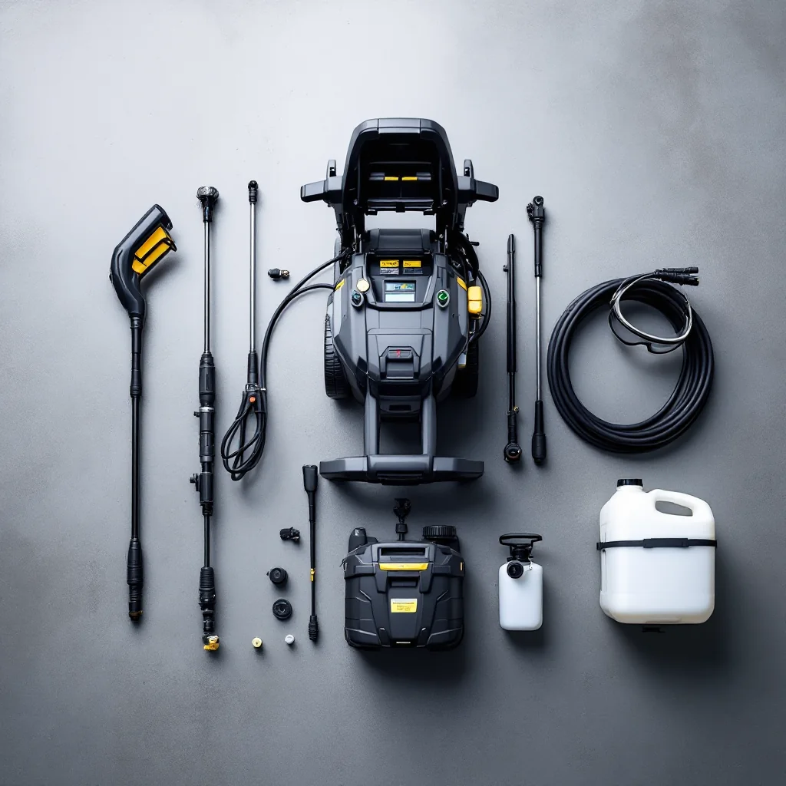

Pressure Washing FAQ — Knoxville TN

Answers to the most common questions about pressure washing in the Knoxville area.
Pressure washing costs in Knoxville typically range from $150–$500 for residential services. Driveway cleaning starts around $150, house washing from $250, and roof cleaning from $350. Commercial projects are quoted individually. Check our complete cost guide for detailed pricing.
Pressure washing uses high-pressure water to clean hard surfaces like concrete and brick. Soft washing uses low pressure combined with specialized cleaning solutions to safely clean delicate surfaces like vinyl siding, roofs, and painted wood without causing damage. We use the right method for each surface.
In the Knoxville area, we recommend having your house washed every 1–2 years. Tennessee's humid climate promotes faster growth of mold, mildew, and algae, especially on north-facing walls and shaded areas. Driveways and walkways benefit from annual cleaning.
Not when done properly. We use soft washing techniques for vinyl siding, painted surfaces, and other delicate materials. Our team adjusts pressure settings and nozzle types for each surface to ensure thorough cleaning without damage.
Yes. We use biodegradable, environmentally responsible cleaning solutions that are safe for your landscaping, pets, and family. We also follow best practices for water runoff management.
Most residential jobs are completed in 2–4 hours. A standard driveway takes about 1–2 hours, a full house wash 2–3 hours, and a complete exterior package (house, driveway, walkways) can be done in a single day.
No, you don't need to be home. We just need access to an outdoor water spigot and the areas being cleaned. We'll send you before and after photos when the job is complete.
Yes, professional pressure washing can remove most oil stains from concrete driveways. For stubborn or old stains, we use specialized degreasing agents before pressure washing for the best results. See our driveway cleaning page for more details.
We serve all of Knox County and surrounding areas including Farragut, Powell, Halls, Bearden, Fountain City, Karns, West Knoxville, and Maryville.
Yes, we provide free estimates for all pressure washing projects. Most quotes can be given over the phone or via email with a few photos. For larger or complex projects, we'll schedule a free on-site assessment. Request yours here.
We can perform pressure washing during winter months when temperatures are above 40°F. Knoxville's mild winters allow for year-round service on most days, though spring and fall are the most popular seasons for exterior cleaning.